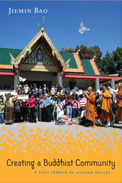

How a Thai Buddhist temple in northern California created a dynamic community that bridges national, racial, ethnic, religious, and gender differences
How a Thai Buddhist temple in northern California created a dynamic community that bridges national, racial, ethnic, religious, and gender differences


 How a Thai Buddhist temple in northern California created a dynamic community that bridges national, racial, ethnic, religious, and gender differences
How a Thai Buddhist temple in northern California created a dynamic community that bridges national, racial, ethnic, religious, and gender differences

|  |
Creating a Buddhist CommunityA Thai Temple in Silicon ValleyJiemin Baopaper EAN: 978-1-43990-955-3 (ISBN: 1-4399-0955-5) |
“Creating a Buddhist Community explores the founding and development of a Thai Buddhist temple in Silicon Valley with an eye toward how the temple functions as a social, economic, and cultural hub. The book’s greatest strengths are the detailed stories it presents about the ways people interact with the temple in terms of their physical work, education, and financial relationships. Bao has clearly spent significant time in the field and knows this community very well.”
—Wendy Cadge, Professor of Sociology at Brandeis University and author of Heartwood: The First Generation of Theravada Buddhism in America
The Wat Thai Buddhist Temple in Silicon Valley was founded in 1983 by a group of predominantly middle-class men and women with different ethnic and racial identities. The temple, which functions as a religious, social, economic, educational, and cultural hub, has become a place for the community members to engage in spiritual and cultural practices.
In Creating a Buddhist Community, Jiemin Bao shows how the Wat Thai participants practice Buddhism and rework gender relationships in the course of organizing temple space, teaching meditation, schooling children in Thai language and culture, merit making, fundraising, and celebrating festivals.
Bao’s detailed account of the process of creating an inclusive temple community with Thai immigrants as the majority helps to deconstruct the exoticized view of Buddhism in American culture. Creating a Buddhist Community also explores Wat Thai’s identification with both the United States and Thailand and how this transnational perspective reimagines and reterritorializes what is called American Buddhism.
Excerpt available at www.temple.edu/tempress
Preface
Acknowledgments
1. Introduction: A Community in the Making
2. Creating a Temple Community
3. Erecting a Chapel: Carving Out Cultural Space
4. Monks in the Making
5. Merit Making: Transnational Circuits
6. Shaping and Performing Thai American Identities
7. Conclusion: Interaction, Interdependence, and Transformations
Notes
Glossary
References
Index
Jiemin Bao is a Professor of Anthropology at the University of Nevada, Las Vegas, and the author of Marital Acts: Gender, Sexuality, and Identity among the Chinese Thai Diaspora.
Asian American Studies
Religion
Race and Ethnicity
Asian American History and Culture, edited by K. Scott Wong, Linda Trinh Võ, and Cathy Schlund-Vials.
Founded by Sucheng Chan in 1991, the Asian American History and Culture, series has sponsored innovative scholarship that has redefined, expanded, and advanced the field of Asian American studies while strengthening its links to related areas of scholarly inquiry and engaged critique. Like the field from which it emerged, the series remains rooted in the social sciences and humanities, encompassing multiple regions, formations, communities, and identities. Extending the vision of founding editor Sucheng Chan and emeriti editor Michael Omi and David Palumbo-Liu, series editors K. Scott Wong, Linda Trinh Võ, and Cathy Schlund-Vials continue to develop a foundational collection that embodies a range of theoretical and methodological approaches to Asian American studies.
© 2015 Temple University. All Rights Reserved. This page: http://www.temple.edu/tempress/titles/2244_reg.html.